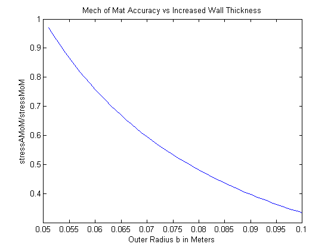

Contents
Intro
David Vadnais
% In class, we developed an Airy stress function suitable to solve the thickwalled % cylinder problem. Noting that displacements had to be single-valued, % we obtained stresses of the form % ?rr =A/r^2+ 2C, % ??? = ?A/r^2+ 2C, % ?r? = 0
PART A
(a) Let r = a at the inner surface of the cylinder and r = b at the outer surface. If we have a pressure, p, on the inner surface, evaluate the constants A and C. Write out the final form of the stresses.
% @ surface BCS % traction1 = [0;0]; % normal1 = [1;0]; % traction2 = [P;0]; % normal2 = [-1;0]; % C = a^2* P/(2*(a^2-b^2)) % A = a^2*b^2*P/(a^2-b^2)
PART B
(b) Recall from basic mechanics of materials that the “hoop” stress in a thin-walled pressure vessel is given by ???MoM = pr/t = pr/(b ? a) Develop a plot of ???/???MoM versus the thickness of the cylinder, b ? a. For the elasticity solution, evaluate the ??? stress component at r = b. For this calculation, take a = 50 mm and increment the b dimension starting from b = 51 mm. Note that the pressure is not needed as it cancels in the expression you are plotting.
P=1;%dumby a = 0.050;%m b = .051:.001:.100;%m C = -a^2*P./(2*(a^2-b.^2)); A = a^2*b.^2*P./(a^2-b.^2); sigMoM = P*b./(b-a); sigAMoM = -(A./(b.^2))+ 2*C; figure (1) plot(b,sigAMoM./sigMoM) title('Mech of Mat Accuracy vs Increased Wall Thickness') xlabel('Outer Radius b in Meters') ylabel('stressAMoM/stressMoM')